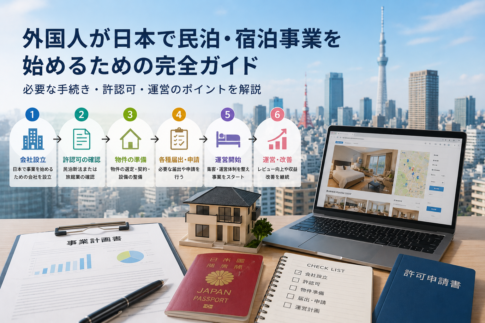

How Foreigners Can Start an Accommodation Business in Japan

Starting an accommodation business in Japan as a foreign national involves several steps beyond what domestic entrepreneurs face. From obtaining the appropriate visa to setting up a company, opening a bank account, and securing permits, the process requires careful planning. This guide outlines the key stages for foreign entrepreneurs entering Japan's accommodation market.
Visa and Company Setup
Foreign nationals need a suitable visa to operate an accommodation business in Japan. The Business Manager visa is the most common route for entrepreneurs, requiring a minimum investment of 30 million yen or the employment of two full-time staff. Before applying, you will need to establish a Japanese company (typically a Godo Kaisha or Kabushiki Kaisha), secure a physical office address, and register with the Legal Affairs Bureau. This process can take 1-3 months.
Bank Account and Capital
Opening a corporate bank account in Japan has become more challenging for foreign-owned companies in recent years. Many banks require the company representative to be physically present in Japan and may request additional documentation. Having a clear business plan, proof of capital source, and local representation can significantly ease this process. Capital requirements vary depending on your chosen accommodation model, but adequate funding for property acquisition, renovation, and initial operating costs is essential.
Permits and Property Acquisition
Once the company is established, you can proceed with property acquisition and accommodation permits. Whether you choose hotel license or private lodging registration, compliance with local ward regulations is mandatory. Foreign buyers face similar procedures to domestic buyers for property acquisition, though financing from Japanese banks may require additional documentation or a higher down payment. Engaging a bilingual advisor familiar with both the real estate and regulatory landscape is highly recommended.
Operational Readiness
Beyond permits, you will need to set up OTA channel management, cleaning systems, multilingual guest communication, pricing strategy, and maintenance procedures. Foreign operators have the advantage of understanding international guest expectations, which can be a differentiator. Kaisei provides end-to-end support for foreign entrepreneurs — from visa consultation and company setup to property search, permit applications, and ongoing operations management.
For accommodation launch, operations, or investment — consult Kaisei
Consultations are free. Feel free to reach out.
Free Consultation